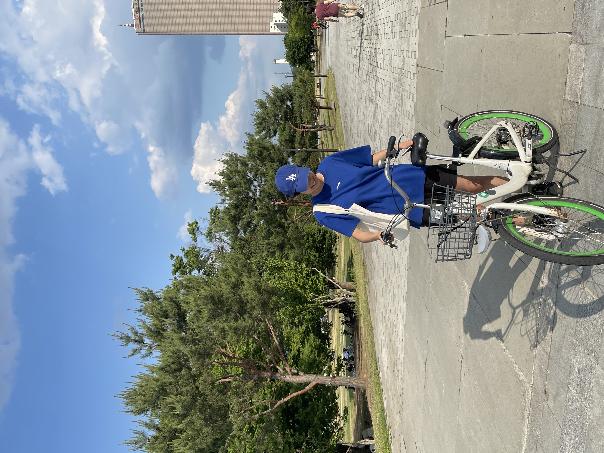
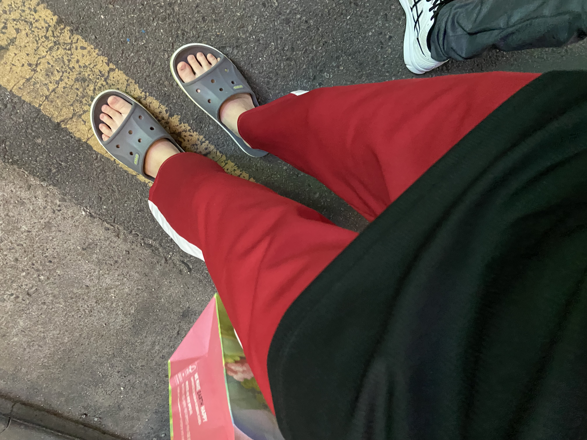

일기장
6월 8일 수요일 날씨 흐림
오늘은 오전에 승마를 했다.
원더랑 파트너였는데 반동이 없어서 편했다.
체감 탑승 난이도 원더<<천마<<<<<<<<보리
(보리야 언니가 사랑해)

오늘 생활코딩 유튜브로 공부해서 처음으로 내 홈페이지를 만들었다.
재밋는 하루였다^~^
앞으로의 발전을 기대하시라
오늘의 일기 끝
6월 9일 목요일 날씨 비옴
오늘 아침에 비가 와서 과외 가는 걸 걱정했는데 다행히 가기 전에 그쳤다
역시 난 럭키가이 하하하
오늘은 코딩 시작 마의 작심 3일차다
드디어 홈페이지 링크 만드는 법을 공부했다
웹 호스팅이 더 쉽다고 해서 호스팅으로 만들어 보았는데 작동이 잘 되어서 좋았다.
index.html 이라는 이름의 파일이 꼭 있어야 호스팅 프로그램이 작동된다는 점이 중요한듯
강의에서 안 알려줘서 약간 헤맷다
첨에 404 에러가 계속 뜨길래 좀 절망함
이것이 개발자의 심정인가?
내일은 직접 웹을 운영하는 법을 공부해야겠다
오늘의 일기 끝~^^
6월 11일 토요일 날씨 비옴
코딩 공부 마의 작심3일을 넘김^.^
아침에 어김없이 이화플레이걸스 훈련을 갔다.
학교 가면서 든 생각: 복학하면 절대 1교시 듣지 말아야지..^^
어려운 플라이볼을 멋지게 하나 잡아서 기분이 좋았음. 후후
근데 너무 더워서 조금 힘들었다. 살짝 토할 뻔 했삼..
훈련 끝나고 할아버지를 모시고 집에 왔따.
임은혜씨가 (자체)종강 기념으로 31도의 날씨에 자전거를 타러 한강을 가자고 하셨다.
더워 디질뻔 슈발
그래두 오랜만에 자전거 타니 시원하고 좋았다.
근데 나와서 보니 너무 파랗게 입어서 조금 민망쓰
마치 기호 1번 외쳐야 할 것 같은 기분
그래서 저녁에는 RED컬러의 pants를 매치 해 주었다.
정치적 중립을 지키는 나 제법 멋져요.
 
오늘은 댓글 기능과 동영상 추가 기능을 공부했따. 좀 어려웠음.
그래도 해 내서 뿌듯하다 후후
끝~^^
6월 13일 월요일 날씨 맑음
오늘 드디어 생활코딩 WEB1 html을 완강했다!
후후후
내 홈페이지도 최소한의 구색은 완성~
일기장에 사진들이 갑자기 엑박이 떠서 좀 당황했다.
이게 바로 개발자의 심정?
확장명을 변경했더니 이제 잘 뜨는 것 같다.
후후.
이제 내일부터는 WEB2 CSS 들어야지